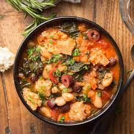

Roma este primul oraș din antichitate care a atins cifra de 1.5 milioane de oameni.
Cele mai mari insule ale peninsulei sunt Sicilia și Sardinia.
Florența este considerată Case Artei. Milano este considerat Casa Modei.
Cele 7 coline ale Romei sunt: Aventin, Caelian, Capitolin, Esquilin, Palatin, Quirinal și Viminal.
Scriitorul Shakespeare a avut ca inspirație mai multe locuri din Italia pentru operele sale, printre care: Verona, Florența, Padova, Roma, Sicilia, Veneția, Milano și Mantova.
În Veneția se află cea mai veche cafenea. Aceasta se numește Caffe Florian și este înființată în 1720.
Construcția Catedralei Sfântului Petru din Vatican a durat 120 de ani. Este cea mai mare construcție creștină din lume.
Deși cu o istorie de mii de ani, statul Italian este unul dintre cel mai tinere din Europa. Acesta s-a unificat în anul 1861.
Deși ne referim la „italiană” ca limbă generală, în realitate există peste 35 de dialecte, multora fiindu-le dificil să înțeleagă ce vorbesc alți oameni din alte regiuni.
Se regăsesc 3 vulcani activi. Numele acestora sunt:Vezuviu, Etna și Stromboli.
Stat peninsular, Italia este formată din 20 de regiuni și peste 450 de insule.
Cu o suprafață de peste 300.000 km pătrați, limba italiană diferă de la Nord la Sud. Influențele vecinilor se regăsesc în fiecare regiune, însă Lingua Franca provine din dialectul Toscan.
Este adesea numită „Il bel paese”, care se traduce prin „țara frumoasă„ sau „the beautiful country”. „The” din engleză reflectă unicitatea locului.
Italia este singurul stat din lume în interiorul căruia se regăsesc 2 enclave, Vatican și San Marino.
Pianul și Termometrul sunt invenții italienești.
Italia este a 4-a cea mai vizitată țării a lumii anual, cu un total de peste 45 milioane de turiști.
Băuturile alcoolice fac parte din cultura italiană. În medie, un cetățean italian consumă aproape 100 litri de vin anual.
Sportul național este fotbalul.
Echipa Squadra Azzurra a câștigat Campionatul Mondial de Fotbal de 4 ori: 1934, 1938, 1982 și 2006.
Ciuma bubonică care a afectat o mare parte din Europa a făcut ravagii și în Italia.Aceasta a afectat o treime din populația țării în secolul al XIV-lea.
Animalul național al Italiei este lupul. Acesta provine din legenda romană a lui Romulus și Remus, celebrii fondatori ai Cetății Eterne.
Cele mai celebre mașini sport provin din Italia: Ferrari, Lamborghini sau Maserati.
Regiunea Emilia Romagna este casa celei mai vechi universități încă deschisă, Universitatea Bologna.
Aici au fost inventați ochelarii în secolul al XVIII-lea.
Festivalul de film de la Veneția este cel mai vechi din lume.
Ziua Națională a țării este pe 2 iunie. Este data în care cetățenii au renunțat la monarhie.
Câteva cuvinte despre gastronomia Italiei:
PIZZA:
Deși o bucată de pâine servită cu ulei și mirodenii a existat cu mult înainte de unificarea Italiei, poate că nu există un fel de mâncare la fel de comun sau la fel de reprezentativ pentru țară ca umila pizza.
Pizza ușoară, ieftină și sățioasă a fost de multă vreme o gustare sau o masă obișnuită în mâncarea italiană, în special în Napoli, unde a fost adăugat pentru prima dată sosul de roșii.
Astăzi, există în esență două tipuri de pizza din care să alegeți în Italia: pizza în stil napolitan sau pizza în stil roman (deși, pentru a fi sincer, există o mulțime de locuri de livrare care sunt o cale de mijloc între cele două).
Pizza în stil napolitan
are o crustă groasă și pufoasă. Tinde să fie puțin mai mic în diametru deoarece aluatul nu s-a întins atât de mult și este mai abundent.
Pizza în stil roman
are o bază subțire ca hârtie și abia crocantă (nu vreți să o ude!). Are un diametru mai mare, dar este în general mai ușor și mai puțin ca o bombă cu gluten.
LASAGNA:
Lasagna este o fidea lata, plat de paste, copt de obicei în straturi în cuptor.
La fel ca majoritatea mâncărurilor italiene, originile sale sunt foarte controversate, dar cel puțin putem spune că fortăreața sa se află în regiunea Emilia-Romagna, unde a fost transformată din mâncarea unui om sărac într-o masă bogată, umplută cu ragout sau sos, carne.
RIBOLLITA:
Cu rădăcini în bucătăria țărănească a regiunii și tipică în mâncărurile italiene, această supă de legume este îngroșată cu pâine în loc de carne, pentru că asta a fost mai ieftin și mai disponibil timp de sute de ani în mediul rural italian extrem de sărac.
În Toscana, preparatul este considerat un răsfăț special toamna, când aroma legumelor din recoltare este cea mai vibrantă și supa explodează cu aromă intensă în ciuda absenței cărnii (cel puțin în versiunile tradiționale).
Adesea consumată ca aperitiv, mai degrabă decât ca paste în trattorie din Florența, aceasta este o tocană consistentă care prezintă puterea imensă și adesea neexploatată a produselor mari.
